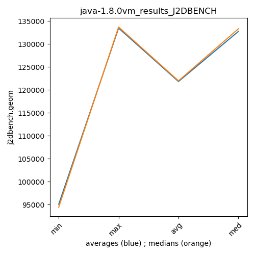

java-1.8.0 J2DBENCH
Context at bottom
/home/jvanek/git/benchmarks-in-nested-virtualisation-toolchain/final_results/vm_results/vm_results_RADARGUNs1
java-1.8.0
J2DBENCH
/home/jvanek/git/benchmarks-in-nested-virtualisation-toolchain/final_results/vm_results/vm_results_RADARGUNs3
java-1.8.0
J2DBENCH
/home/jvanek/git/benchmarks-in-nested-virtualisation-toolchain/final_results/vm_results/vm_results_DACAPO
java-1.8.0
J2DBENCH
/home/jvanek/git/benchmarks-in-nested-virtualisation-toolchain/final_results/vm_results/vm_results_J2DBENCH
java-1.8.0
J2DBENCH
vm_results_J2DBENCH
final score
Expected number of java-1.8.0 JDKs: 10
1st avgmed_alljdks_metric:
/home/jvanek/git/benchmarks-in-nested-virtualisation-toolchain/final_results/result_processing.py /home/jvanek/git/benchmarks-in-nested-virtualisation-toolchain/final_results/vm_results/vm_results_J2DBENCH j2dbench.geom False
values: [133464, 131696, 132052, 132314, 133486, 133637, 131723, 133714, 133684, 133902, 132132, 132329, 133539, 133986, 133707, 133717, 134020, 133439, 132066, 134147, 133987, 133673, 133812, 133079, 131781, 133399, 131593, 132750, 133436, 132278, 131735, 133557, 133327, 131656, 133493, 96614, 96478, 96862, 96859, 95432, 94428, 95707, 94446, 96424, 94417, 94791, 95801, 95821, 94623, 97053]

Expected number of iterations: 5
final number of values: 50 out of 50
Pass rate: 100.0%
values: (94417, 134147, 121841.32, 132314)

** accuracy from all jdks and runs
more is better
MIN: 94417
MAX: 134147
AVG: 121841.32
MED: 132314
Relative differences 1:
MIN-MAX: 30.0 %
MIN-AVG: 23.0 %
MIN-MED: 29.0 %
MAX-MIN: -42.0 %
MAX-AVG: -10.0 %
MAX-MED: -1.0 %
AVG-MED: 8.0 %
stored to java-1.8.0.properties. sort | uniq that!
2nd avgmed_by_jdk_metric:
values: [132602.4, 133332.0, 133138.6, 133477.8, 133266.4, 132691.2, 132753.6, 96449.0, 95084.4, 95617.8]

values: [132314, 133684, 133539, 133717, 133673, 132750, 133327, 96614, 94446, 95801]

values: (95084.4, 133477.8, 121841.31999999999, 132753.6)
values: (94446, 133717, 121986.5, 133327)

** accuracy from all jdks where runs were avged
more is better
MIN: 95084.4
MAX: 133477.8
AVG: 121841.31999999999
MED: 132753.6
Relative differences 1:
MIN-MAX: 29.0 %
MIN-AVG: 22.0 %
MIN-MED: 28.0 %
MAX-MIN: -40.0 %
MAX-AVG: -10.0 %
MAX-MED: -1.0 %
AVG-MED: 8.0 %
stored to java-1.8.0.properties. sort | uniq that!
** accuracy from all jdks where runs were medianed
more is better
MIN: 94446
MAX: 133717
AVG: 121986.5
MED: 133327
Relative differences 1:
MIN-MAX: 29.0 %
MIN-AVG: 23.0 %
MIN-MED: 29.0 %
MAX-MIN: -42.0 %
MAX-AVG: -10.0 %
MAX-MED: -0.0 %
AVG-MED: 9.0 %
stored to java-1.8.0.properties. sort | uniq that!
/home/jvanek/git/benchmarks-in-nested-virtualisation-toolchain/final_results/vm_results/vm_results_SPECJBB
java-1.8.0
J2DBENCH
/home/jvanek/git/benchmarks-in-nested-virtualisation-toolchain/final_results/vm_results/vm_results_JMH
java-1.8.0
J2DBENCH
pass rates:
vm_results_J2DBENCH=100.0%
Context:
- vm_results
- J2DBENCH